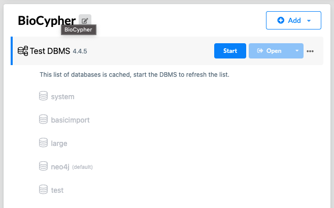

Neo4j
In the following section, we give an overview of interacting with Neo4j from the perspective of BioCypher, but we refer the reader to the Neo4j documentation for more details.
Install Neo4j
Neo4j provide a Neo4j Desktop application that can be used to create a local instance of Neo4j. The desktop application provides information about the DBMS folder and can open a terminal at the DBMS root location.
Neo4j is also available as a command line interface (CLI) tool. To use the CLI with the BioCypher admin import call, directory structures and permissions need to be set up correctly. The Neo4j CLI tool can be downloaded from the Neo4j download center. Please follow the Neo4j documentation for correct setup and usage on your system.
Be mindful that different versions of Neo4j may differ in features and thus are also documented differently.
Note
We use the APOC library for Neo4j, which is not included automatically, but needs to be installed as a plugin to the DMBS. For more information, please refer to the APOC documentation.
Neo4j settings
To overwrite the standard settings of Neo4j, add a neo4j section to the biocypher_config.yaml file.
The following settings are possible:
neo4j: ### Neo4j configuration ###
# Database name
database_name: neo4j
# Wipe DB before import (offline mode: --force)
wipe: true
# Neo4j authentication
uri: neo4j://localhost:7687
user: neo4j
password: neo4j
# Neo4j admin import batch writer settings
delimiter: ';'
array_delimiter: '|'
quote_character: "'"
# MultiDB functionality
# Set to false for using community edition or older versions of Neo4j
multi_db: true
# Import options
skip_duplicate_nodes: false
skip_bad_relationships: false
# Import call prefixes to adjust the autogenerated shell script
import_call_bin_prefix: bin/ # path to "neo4j-admin"
import_call_file_prefix: path/to/files/
Offline mode
Particularly if the data are very extensive (or performance is of the
utmost priority), BioCypher can be used to facilitate a speedy and safe
import of the data using the neo4j-admin import console command.
Admin
Import
is a particularly fast method of writing data to a newly created graph
database (the database needs to be completely empty) that gains most of
its performance advantage from turning off safety features regarding
input data consistency. Therefore, a sound and consistent representation
of the nodes and edges in the graph is of high importance in this
process, which is why the BioCypher export functionality has been
specifically designed to perform type and content checking for all data
to be written to the graph.
Data input from the source database is exactly as in the case of interacting
with a running database, with the data representation being converted to a
series of CSV files in a designated output folder (standard being
biocypher-out/ and the current datetime). BioCypher creates separate header
and data files for all node and edge types to be represented in the graph.
Additionally, it creates a file called neo4j-admin-import-call.sh
containing the console command for creating a new database, which only has to be
executed from the directory of the currently running Neo4j database.
The name of the database to be created is given by the db_name setting, and
can be arbitrary. In case the db_name is not the default Neo4j database
name, neo4j, the database needs to be created in Neo4j before or after using
the neo4j-admin import statement. This can be done by executing, in the
running database (<db_name> being the name assigned in the method):
:use systemcreate database <db_name>:use <db_name>
After writing knowledge graph files with BioCypher in offline mode for the Neo4j
DBMS (database management system), the graph can now be imported into Neo4j
using the neo4j-admin command line tool. This is not necessary if the graph is
created in online mode. For convenience, BioCypher provides the command line
call required to import the data into Neo4j:
bc.write_import_call()
This creates an executable shell script in the output directory that can be executed from the location of the database folder (or copied into the Neo4j terminal) to import the graph into Neo4j. Since BioCypher creates separate header and data files for each entity type, the import call conveniently aggregates this information into one command, detailing the location of all files on disk, so no data need to be copied around.
Note
The generated import call differs between Neo4j version 4 and 5.
Starting from major version 5, Neo4j import command needs the
database scope. BioCypher takes care of this.
The generated import script neo4j-admin-import-call.sh
first checks the Neo4j database version and uses the correct
import statement for the detected version. Therefore make sure to run
the script from the targeted DBMS root location.
Neo4j can manage multiple projects, each with multiple DBMS (database management system) instances, each of which can house multiple databases. The screenshot below shows a project managed by Neo4j Desktop (project name “BioCypher”) containing a DBMS instance (called “Test DBMS”) with multiple named databases in it: the non-removable “system” DB, the default “neo4j” DB, and several user-created databases.

Crucially, the import call generated by BioCypher needs to be executed by the
neo4j-admin binary in the DBMS folder (in the bin/ directory of the root of
the DBMS folder). The DBMS folder is the folder that contains the data/
directory, which in turn contains the databases/ folder, which is where the
graph data is stored in individual folders corresponding to the DB names in the
DBMS. On Neo4j Desktop, you can open a terminal at the DBMS root location by
clicking on the three dots next to the DBMS name and selecting “Terminal” (see
screenshot below).

Since the import call should be executed in the root of the DMBS folder,
BioCypher generates the import call starting with bin/neo4j-admin, which can
be copied into the terminal opened at the DBMS root location. For other
operating systems and Neo4j installations (e.g. in Docker containers), please
refer to the Neo4j documentation to find the correct location of your DMBS. We
are working on extensions of the BioCypher process to improve interoperability
with Neo4j as well as other storage systems.
Online mode
BioCypher provides a Python driver for interacting with Neo4j, which is
accessed through the BioCypher class when setting offline to False.
More details can be found in the API docs.
If there exists no BioCypher graph in the currently active database, or
if the user explicitly specifies so using the wipe attribute of the
driver, a new BioCypher database is created using the schema
configuration specified in the schema-config.yaml.